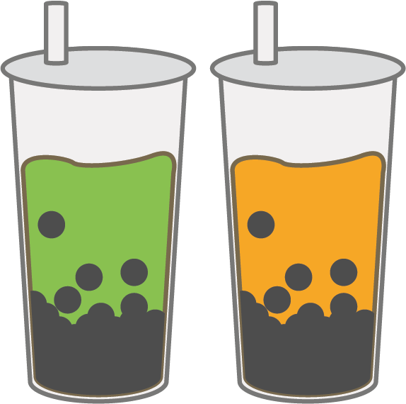

珍珠奶茶 BUBBLE MILK TEA
Probably the most famous Taiwanese food. Popular in the West, these drinks are a staple of the Taiwanese diet. There are many chain drink stores that sells these, and are often sorted by their price and how well they taste. Costing at about five dollars in the US, bubble mlik tea is very cheap in Taiwan, at about one dollar. These boba pearls are made out of brown sugar and tapioca starch, which is why it tastes so chewy. They are then cooked off further in brown sugar syrup after coming out of boiling water. Served with milk tea, there are now hundred of variation of this drink such as matcha and Thai milk tea.